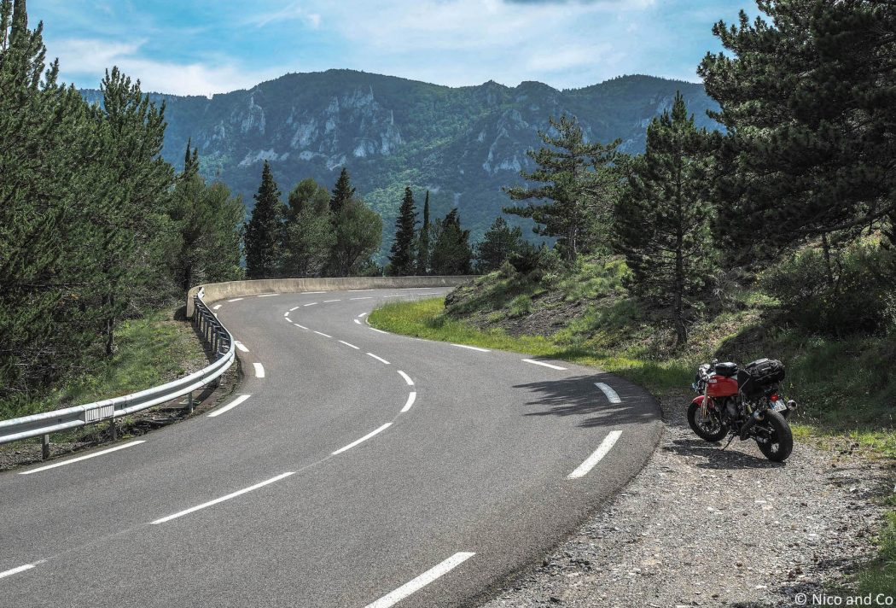
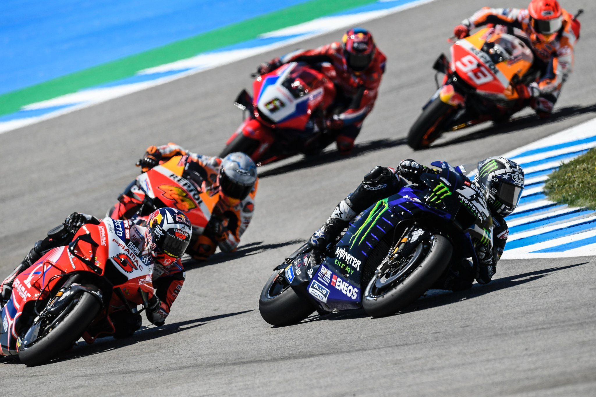
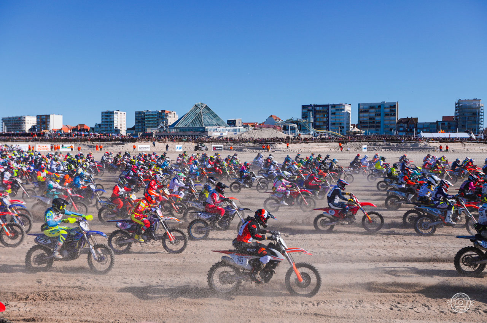
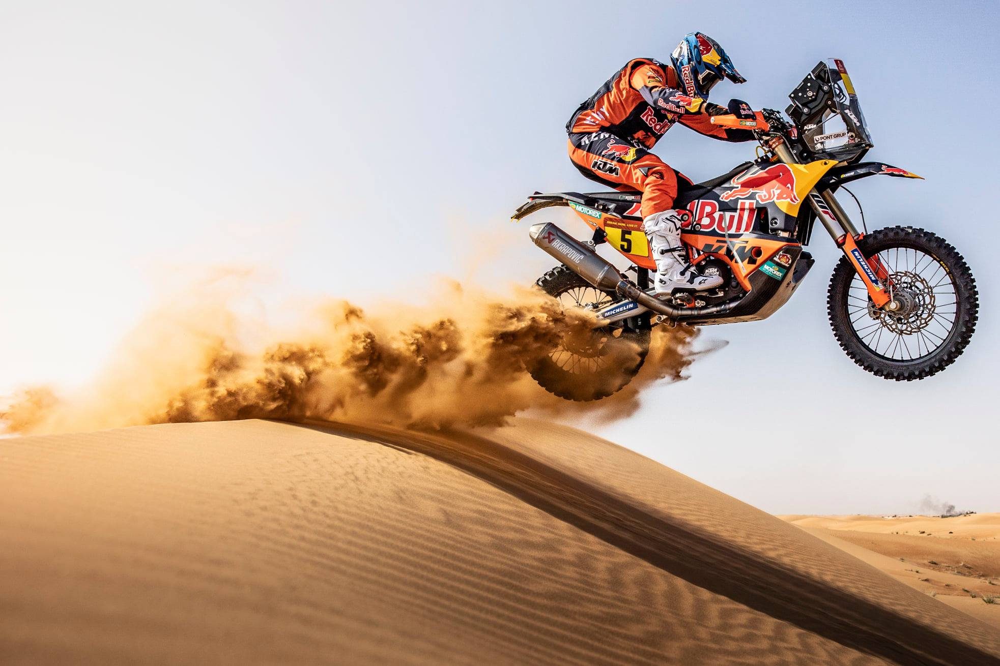

Il y a plusieurs manières de faire de la moto en guise de loisir :
La première est de simplement se balader sur des routes et de profiter des lieux
où on se trouve. C’est pour moi une des meilleures façons de se vider l’esprit et de tout
oublier et simplement de profiter des paysages et des routes.


La deuxième façon de faire de la moto est d’aller sur un circuit. Des sessions sont souvent organisées
pour le particulier et tout le monde peut y participer peu importe le niveau de chacun. L’avantage
d’aller sur un circuit est d’apprendre à bien maitriser sa moto et mieux la connaitre tout en étant
encadré et coaché par des professionnelles. La pratique sur circuit est connue mondialement et en grande
partie grâce aux courses MotoGP.

Une autre manière connue de pratiquer la moto est d’en faire avec un motocross ou un enduro. Les deux
pratiques sont assez similaires que ce soit sur un terrain privé, sur piste ou dans les zones autorisées
en pleine nature, le principe est le même : rouler dans la terre ou dans le sable et faire la course avec
les autres participants. Une des courses la plus connu en France est l’enduropale du Touquet. Cette course
se déroule sur la plage du Touquet avec plus de 1200 participants de tout niveau sur la piste en même temps.
Une autre course connue mondialement est le Dakar mais celle-ci est seulement faite avec des enduros dans la
catégorie moto.
